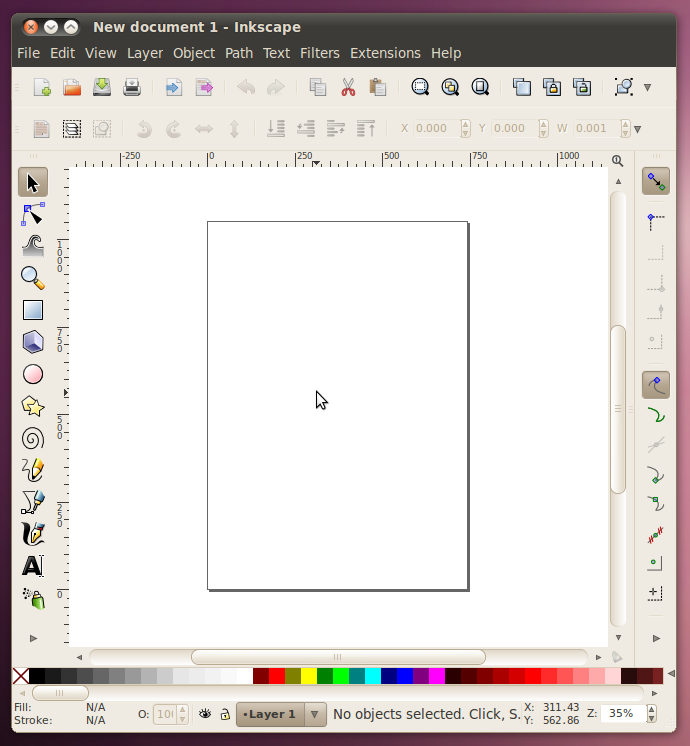
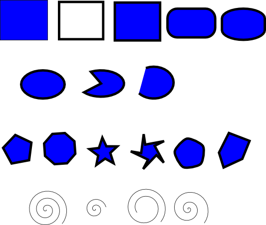
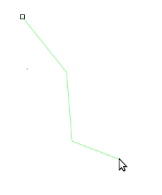
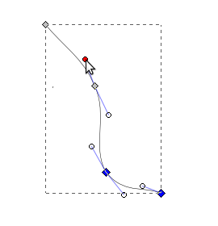
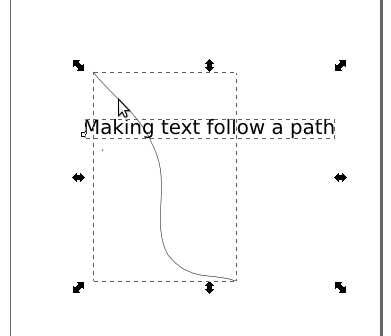
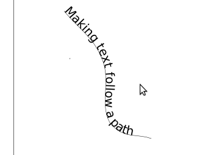

Inkscape
Inkscape will be the vector editor that we do the majority of our work
in, once we have learned the fundamentals here, we will move on to
trying the same concepts out in Adobe Illustrator, which is the other
major vector graphics editor on the market. If you don't have
Inkscape on your computer, you can get it from our software downloads page.
To start with Inkscape, there are three interactive tutorials that are
built in to the program that are very good, and because they are
interactive, they are better than just words on paper, so instead of
reading what they have to tell you here, lets open up Inkscape and give
them a try.

Once you have Inkscape open...
Inkscape Basics
Go to the menu Help -> Tutorials -> Inkscape: Basics. That
will open in a new window and you can read all about (and try out!)
panning, zooming, the tools, documents, moving, scaling, rotating,
important keys, selections, fills, strokes, duplication, layers, and
depth.
Now that we have a grasp on the basics, lets go do an example. I
have prepared a .svg file that can be opened in Inkscape with all the
material that we'll need.
BasicScene-orig.svg

In this one SVG file there is a background all setup (made up of two
parts: the foreground with all the trees, ground, and water; and the
background with the sky). There are also three different
components that need to be added in. The fire and tent need to be
scaled down and put in the empty area between the trees. The
mountains need to be scaled up and be put behind the ground and trees
but in front of the sky.
Here's what the finished result will look like.

Working with Shapes
Once you've mastered those basics, we'll move on to the next tutorial:
Help -> Tutorials -> Inkscape: Shapes
Here we will learn about and try out:
Rectangles (with rounding), ellipses and circles, stars and polygons,
and spirals.
Now lets go and try out all the shape tools and many of their different
options. In one Inkscape page, draw the following.
Rectangle: Filled with no stroke, stroke with no fill, fill and stroke,
rounded corners, rounded corners and edges.
Ellipse: Ellipse, slice, arc.
Polygon/Star: Polygon, polygon with different number of sides, star,
star with offset points, polygon with rounded corners, polygon with
randomizer.
Spiral: Spiral, spiral with less turns, spiral that doesn't start from
the middle, spiral with faster divergence.
Your page may look something like this:

Creative Exercise 1:
Use only the basic shapes (and various fill/stroke colors) to create an
image of abstract art.
Creative Exercise 2:
Use the star tool to create a unique pattern.
Paths and Text
Finally, we have one last tutorial that introduces some of the most
important concepts:
Help -> Tutorials -> Inkscape: Advanced
Here we will learn about:
Cutting and pasting, free hand drawing, bezier curves, paths and text.
One of the most important parts of this section is working with bezier
curves. To get a little practice, we're going to turn a simple
rectangle into a piece of paper that is starting to curl
up. Here's what the end result will look like:

First, download the .svg
file of the starting rectangle.
You'll notice that there are a couple of handy nodes about half way
down the sides of the rectangle. Let's go ahead and pull both of those
nodes to the right (using the node-editing mode).
Once we've got them out there, we will add some bezier curves into the
strait lines. To do this, hold down shift as you click on one of
the nodes, and drag out from it. That should create a handle for
the curve coming out of that point. Go ahead and do that for both
sides of the middle points, and then also to the lines coming down from
the two top points.
Once we've got the paper gently curling, lets add some example
text. To do that, we'll switch to the text tool. Then click
near the center of the paper and type whatever text you want to
see. You can change the font size, centering, and font to make it
look any way you like.
Now that we've got those basics down, lets use the path tool to make
text follow an irregular path through our drawing.
We'll start out by making a simple path with the Bezier Curve Tool.

Once we've got the basic shape in, we'll manipulate the curve's handles
to smooth it out.

Then we'll switch to the text tool and type in some text.

Now we'll select both the path and the text.

With them selected, we'll click Text -> Put on Path.

Looking good so far, now we just need to get rid of that line that we
have in there. To do that lets select the line and remove its
stroke.

Then finally we're left with just our text.